Food Truck Cafe
26 November. 2026.11.24 is live on the App Store.
1Next
You
Your store test today: the list to tick while you play is at the top of Current.
To pick: an order bubble (1 to 4), a day-end card animation (A to D), a Daily Treats look (1 to 3), and the three ads choices.
To look at: the candy jar changes and the whole-dollar money.
Yesterday (25 November) is in Analysis: 10 new players, $0.10 from ads, 8 downloads.
Me
Cabins: the next round builds on 12 and 13, each with its room inside (after 12:40, when ChatGPT gives pictures again). Order bubble: glass and more cookie versions, and a smaller bubble. Daily Treats: demos of the three looks. Ready: one spot for table and kitchen.
Everything in MVP is done on main and waits for the next test build. Say when you want one.
2Current
26 November: ads, the shop page, and what is left of the game review.
Your store test today: what helps most. The store copy is 2026.11.24. A new game is the most useful: it walks the first days, where players leave. Your phone is left out of the player counts; afterwards I read your session and compare it with what you tick here.
Ads (the first one is due when you start day 3):
Other things to watch
Already known in this version, no need to note: the jumbled text on the day 9 gift card, the notification question at first launch, money shown with and without cents.
Order bubble: four designs, in the real game. Each picture: chapter 1 by day, chapter 1 at night, chapter 2 by day. Today's bubble has no fill at all, only a black line, so the foods sit straight on leaves, palms and the moon, and at night the line nearly disappears.
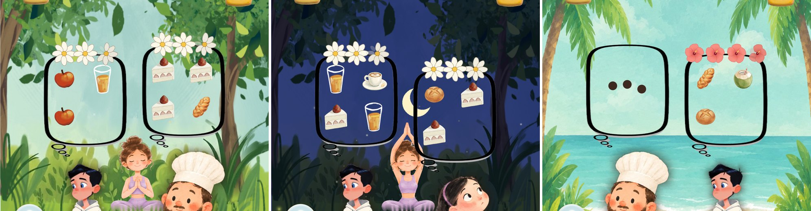
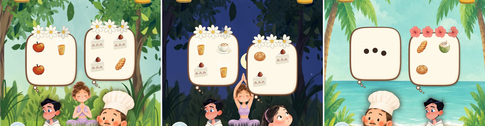
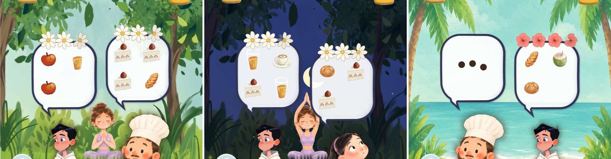
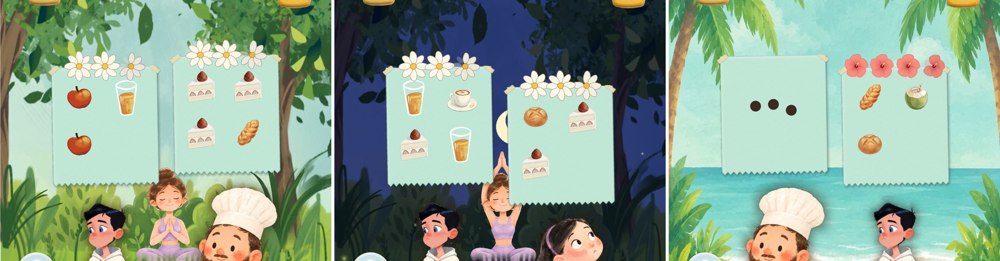
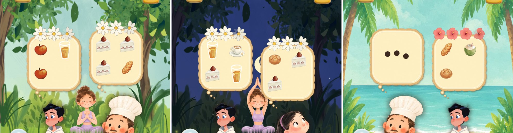
My pick is 1: it matches the paper panels and reads well by day and at night; 4 is close and matches the cookie buttons. One catch on 1 and 2: the juice glass has a white rim that gets faint on cream or white (look at the glass in the pictures); it would need a thin darker rim. On 3 every food is the clearest, but the slip blends a little into the pale sky by day.
Glass, as you asked (the same milky glass as the shop's panels, a soft white rim, a soft hand-drawn shape):
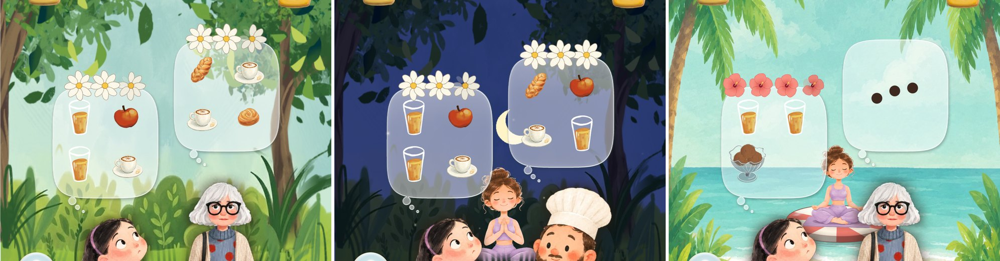
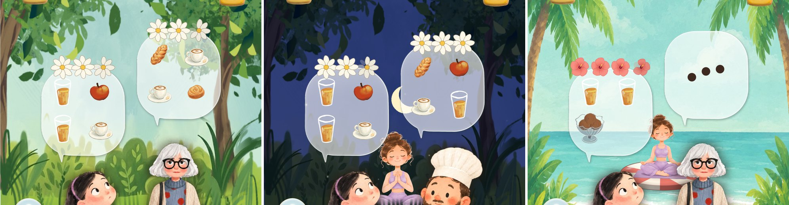
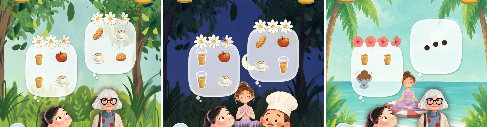
Glass keeps the see-through look but is the weakest at night: the dark sky shows through and the bubble goes grey-blue. The foods still read far better than today.
More iced cookies (you liked 4):
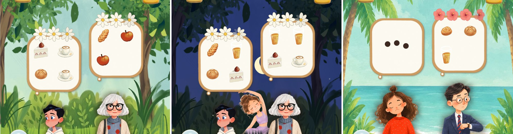
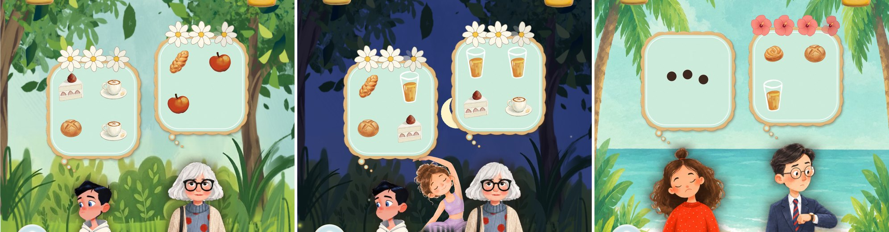
A smaller bubble (butter icing, less space between and around the foods; the foods keep their size):
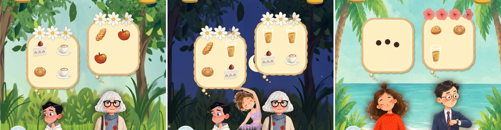
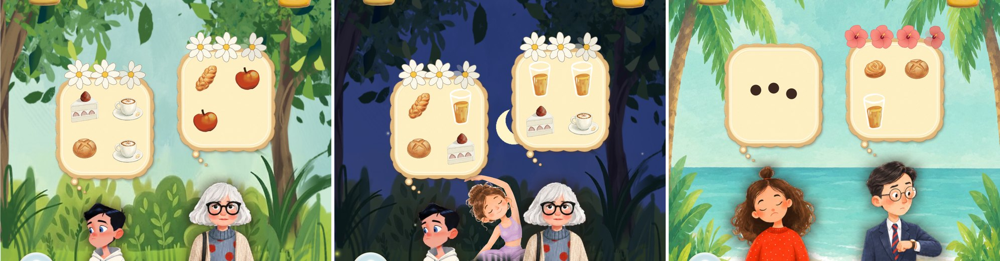
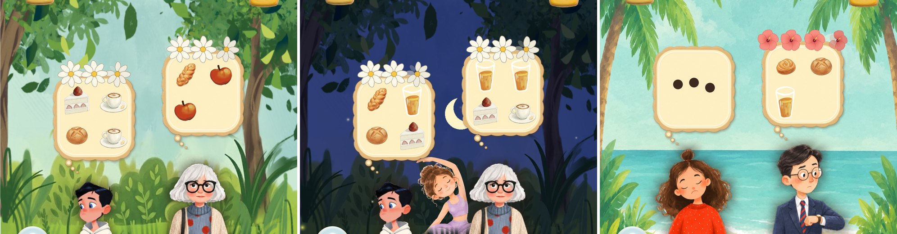
The smaller ones still read well, and two bubbles side by side no longer nearly touch.
Candy jar: no limit, a count card, and Ready moved. The earlier one-candy change is undone: three for $100 as before.
- No limit: every buy adds three, however many are in the jar (checked: 8, then 11, then 14). The jar's picture is full from nine up.
- Count card: a tap on the jar while arranging shows the number. DONE or a tap beside it closes it.
- Ready now sits just above the hen, jar and pots instead of on them. It finds that spot on every screen size.
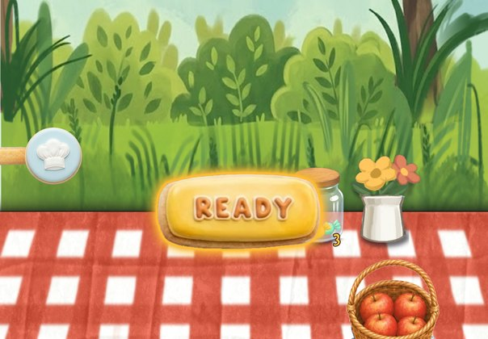
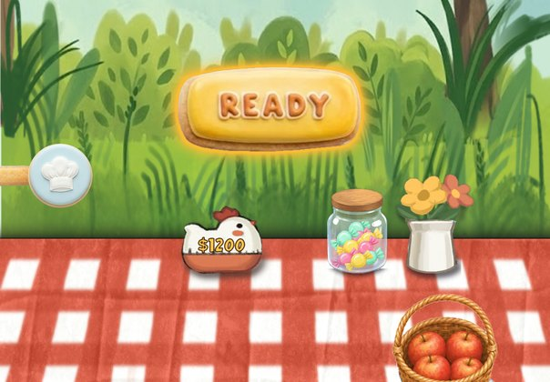
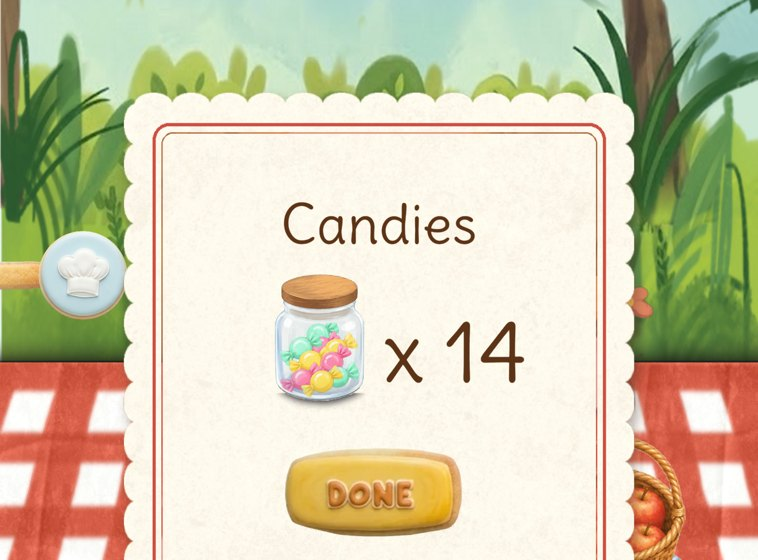
Money is whole dollars everywhere now. Your pick. Tips are rounded to the nearest dollar when earned, so every screen shows the same number. Played one day in the editor: $ 1,200 + $ 492 for the day + $ 100 three-star bonus = $ 1,792 on the card, in the shop and on the map.
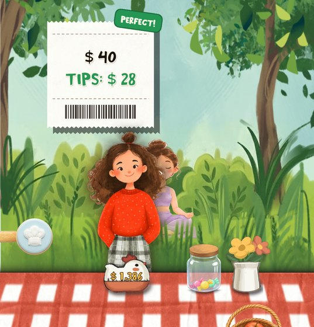
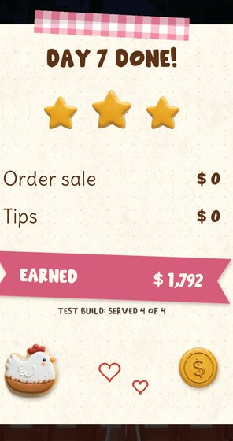
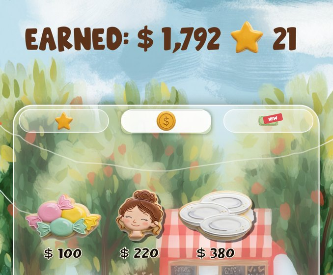
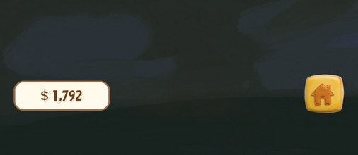
A replayed day pays half, each amount rounded to a dollar. An old save's leftover cents are dropped once. The card still ends with Order sale $ 0 and Tips $ 0: that goes with the new animation below.
Day-end card: four animations to choose from. In all of them the day's amounts stay written, the stars finish before the money starts, and a "3 stars +$ 100" line shows when the bonus is paid (today it is added silently).
Daily Treats: making the three states clear. Today a collected note is only paler with a small tick, today's is only a little bigger, and later ones look just as bright. After Collect, today's note does not change at all: the reward shows somewhere else.
Ads: what happens when an ad should show. Store copies, 18 to 25 November, your phone left out. Unity Ads' own counts beside what the game logs. Almost all of it is on the older versions, where the ad came at the day's end.
Do we need to fix anything? Nothing is broken that must be fixed now.
- No ad loaded, 1 time in 3: the fix is already out in 2026.11.24 (ads start again when their start fails). Wait for a few days of players on it.
- Players closing the app during an ad: not a bug. It is how they skip. The first ad already moved from day 1's end to day 3's start in 2026.11.24; whether that keeps new players is the thing to watch.
- A frozen ad: never seen for sure. The safety net is cheap insurance, not urgent.
- The one thing I would do now: measure. Without logging when an ad starts, is not ready, or fails, we cannot tell next week whether 2026.11.24 fixed the loading. It rides in the next test build if you tick it below.
The numbers behind this:
After 146 finished days:
- 47 times (32 %) the ad played and ended normally, watched or skipped.
- 51 times (35 %) no ad showed at all: none was loaded in time. The player just went on, and we earned nothing.
- 48 times (33 %) the player closed the app, usually about 20 seconds after the day ended: while the ad was on screen.
Who closes the app:
- 23 times the player was back within a minute and played on. Closing the app is their way to skip the ad. Two players did nearly all of it: Japan 15 times (the one who played 20 days), US 7 times.
- 20 times the player did not come back then. At least 7 of them were on their first day.
Unity agrees. From 14 to 25 November Unity counted 161 ads started; the game saw only 88 of them end. The other 73 (45 %) started and never ended, which matches the closes above. Those ads still paid.
Yesterday: 15 ads started, 4 watched whole, 7 skipped, 4 ended by closing the app. All 3 players who closed it stopped playing right there.
Is it a frozen ad? The data cannot tell a stuck ad from a player closing the app. But the same two players do it after every day, 15 to 30 seconds in, and are back in 5 seconds: that reads as skipping, not freezing. The game does have three places where a truly silent ad would leave the screen stuck (the map, the Daily Treats card, the shop's coin button).
2026.11.24 (first ad at the start of day 3, and ads start again if they failed) is too new to judge: 2 ad moments so far. I look again in a few days; that should also show whether "no ad loaded" gets better.
C chapter shop page, numbered. Cabin on the left, truck on the right. Pictures 7 to 13 are removed, as you asked.
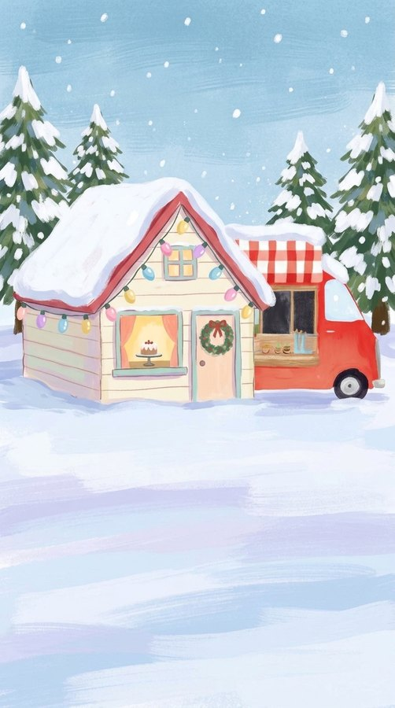

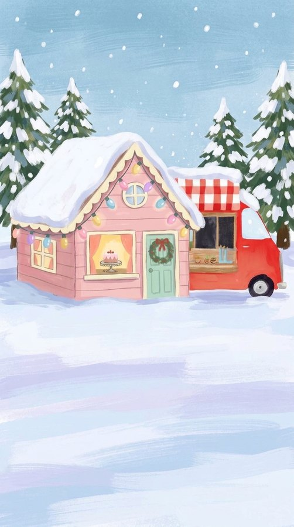

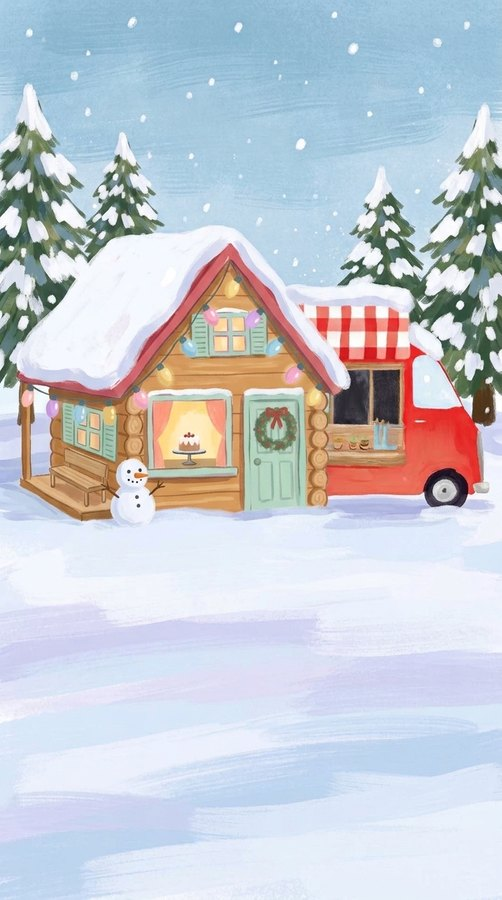
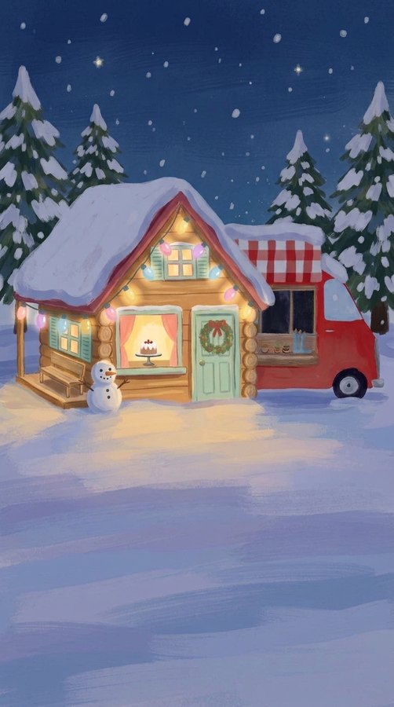
Next round (you like 12 and 13, the pink and the mint cabin without string lights): improved versions of those two with something other than a cake in the window, and for each one the inside of the cabin as the game scene, with the same shape, window and door, so you can pick a cabin and its room together. ChatGPT gives pictures again after 12:40 and Gemini tomorrow.
3MVP
- Day 9 gift card: A GIFT FOR YOU!, the star, Let's go; no other text.
- Menu stickers in the journal's font, prices bigger.
- Waffle machine 6 s.
- Kid orders like the Girl and Boy; Chef always orders the day's largest order.
- No notification prompt.
- Play can no longer wipe a save by a slipped or doubled tap.
- Money in whole dollars on every screen.
- Candy jar: no limit, a count card while arranging, Ready above the back row.
4Backlog
Nothing open.
5Analysis
Yesterday, 25 November (Pacific). Unity Analytics and Unity Ads, read 26 November 08:10; Apple for 25 November (UTC).
Players (store copies): 10 new, 1 returning. You did not play (store or TestFlight).
- Funnel: 10 opened → 6 started the tutorial → 5 finished it → 5 finished day 1 → 4 finished day 2 → 1 went further.
- 4 of 10 left at the first screen (opened, never started the tutorial): US, US, Vietnam, China. That is a lot; one thing they all meet at first launch is the notification prompt (review problem R2), which the game never uses.
- The best player: Malaysia (3d8e9c), 09:04 to 09:36, on the old 2026.11.20: days 1 to 6, and replayed every day that ended on 2 stars until it got 3. 15 things bought (Juice, Grandma, Choux, Chef, the oven upgrade, the yoga lady...). 7 between-days ads (2 watched, 5 skipped) and 1 coin ad watched.
- South Africa (abfd66): day 1 3 stars, day 2 2 stars, bought Juice, Grandma and the yoga lady, then left.
- Indonesia, iPad (8d30c5): day 1 2 stars, day 2 3 stars, still going at the end of the day.
- Philippines (d4dc67), on the old 2026.11.23: day 1 2 stars, an ad after it, day 2 1 star, left.
- Philippines, iPad (2257af): day 1 2 stars, left; opened again in the evening.
- Vietnam (8b56b9): left at tutorial step 5.
- Returning, US (488062), first seen 13 November: days 3 and 4, no stars on either.
- Old versions: 5 of the 11 played 2026.11.18, .20 or .23 (automatic updates off).
- One US first opening came from an unknown device ("iPhone99,7"), maybe a test or review device; counted above.
Income: $0.10, all ads, all from players (12 ads shown, most by the Malaysian player). No purchases. Downloads (Apple, 25 November UTC): 8.
Yesterday, 24 November (Pacific). Unity Analytics, read 25 November 07:45.
Players (store copies)
- 3 new players, all finished the tutorial; only 1 started day 1. A quiet day.
- US, iPad (5e4c6b), 17:38, on 2026.11.23: day 1 two stars ($239), day 2 no stars ($186), day 3 no stars ($314). Earned more on day 3 than on day 1, so they were serving; customers just left before their whole order was done. Skipped all 3 between-days ads; sat 20 minutes on the last one, then left.
- China (c087f3), 22:48: finished the tutorial, did not start day 1.
- Indonesia (3e57ca), 01:27: finished the tutorial and closed 3 seconds later (already in the card below).
- Income without you: $0.04 (ads only, no purchases). With your play: $0.24.
- Left out: Apple's review of 2026.11.24 (US iPhone, 13:09, on 2026.11.24, stopped at tutorial step 3, as every review run does).
You
- Store copy (2026.11.23), 10:36 to 12:17: new game, tutorial, chapter 1 days 1 to 9, then chapter 2 day 1. Stars 3, 2, 2, 2, 3, 3, 2, 2, 2 and 2. 18 things bought. 9 between-days ads (8 watched, the last skipped) and 1 coin ad: ads loaded every time. Every event arrived.
- TestFlight (2026.11.24), 15:55 to 16:00: chapter 1 day 10 and chapter 2 day 2, three stars each.
Players, 22 Nov 9:00 to 24 Nov 9:40 (Pacific). Unity Analytics, production (store copies only).
- 13 players, 12 of them new. By country: Indonesia 3, China 2, US 2, Philippines, Pakistan, Egypt, Cambodia, Taiwan and Malaysia 1 each. Almost all Asia again.
- Tutorial: 7 of the 12 new players finished it. 4 left in the first captions (steps 0 to 5), within a minute. One of those, a US player on 2026.11.23 at 13:24 on the 23rd, is Apple's reviewer (the build under review).
- Two players played a lot:
- Indonesia (599414): 7 visits over two days. Finished all of chapter 1 and is on chapter 2 day 7, with 23 days finished (replays included) and 27 things bought, the whole shop. Not a single ad in all that time. That is the ad start failing and never retrying, the bug fixed for the next release.
- Philippines (425b7c): 4 visits. Finished chapter 1 and reached chapter 2 day 1, 23 things bought. 13 between-days ads, 10 of them skipped; the Daily Treats ad was watched. These are the Philippine ads that made 23 November's income so small.
- Others: Egypt played 3 days and watched both its ads (one rewarded). Indonesia (9b5f99) played 1 day. Malaysia came back for days 1 and 2. China (e7015c) played day 1. Pakistan and Indonesia (3e57ca) finished the tutorial but did not start day 1.
6Marketing
How to grow: market research, 25 November. Our numbers: ~50 installs a week, mostly Philippines, Indonesia, Vietnam; no ratings; most players leave in days 1-3. Cooking games that do well start gently, run limited-time events and sell a retry right after a lost level. Players dislike heavy ads early.
Quick wins
Bigger steps
For scale: a typical casual game keeps about 22 % of players the next day (the best quarter about 30 %) and about 4 % after a week. Ads in Southeast Asia pay a fraction of the US.